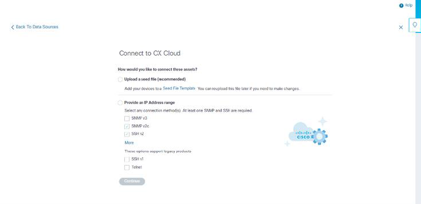

TA seed file is a comma-separated values (csv) file where each line represents a system data record. In a seed file, every seed file record corresponds to a unique device from which telemetry should be collected by CX Cloud Agent. All error or information messages for each device entry from the seed file being imported are captured as part of job log details. All devices in a seed file are considered managed devices, even if the devices are unreachable at the time of initial configuration. In the event a new seed file is being uploaded to replace a previous one, the date of last upload is displayed in CX Cloud.
CX Cloud Agent will attempt to connect to the devices but may not be able to process each one to show in the Assets pages in cases where it is not able to determine the PIDs or Serial Numbers. Any row in the seed file that starts with a semicolon is ignored. The header row in the seed file starts with a semicolon and can be kept as is (recommended option) or deleted while creating the customer seed file.
It is important that the format of the sample seed file, including column headers, not be altered in any way. Click the link provided to view a seed file in PDF format. This PDF is for reference only and can be used to create a seed file that needs to be saved in .csv format.
Notes: This PDF is for reference only and can be used to create a seed file that needs to be saved in .csv format.
The following table identifies all necessary seed file columns and the data that must be included in each column.
When Other Assets is selected from the data sources connection window, the following window opens:
To add other assets as data sources:
Both seed file-based direct device discovery and IP range-based discovery rely on SNMP as the discovery protocol. Different versions of SNMP exist, but CX Cloud Agent supports SNMPV2c and SNMP V3 and either or both versions can be configured. The same information, described below in complete detail, must be provided by the user to complete configuration and to enable connectivity between the SNMP-managed device and SNMP service manager.
SNMPV2c and SNMPV3 differ in terms of security and remote configuration model. SNMPV3 uses an enhanced cryptographic security system supporting SHA encryption to authenticate messages and ensure their privacy. It is recommended that SNMPv3 be used on all public and internet-facing networks to protect against security risks and threats. On CX Cloud, it is preferred that SNMPv3 be configured and not SNMPv2c, except for older legacy devices that lack built-in support for SNMPv3. If both versions of SNMP are configured by the user, CX Cloud Agent will, by default, attempt to communicate with each respective device using SNMPv3 and revert to SNMPv2c if the communication cannot be successfully negotiated.
As part of the direct device connectivity setup, users must specify details of the device connectivity protocol: SSH (or, alternatively, telnet). SSHv2 should be used, except in the cases of individual legacy assets which lack the appropriate built-in support. Be aware that SSHv1 protocol contains fundamental vulnerabilities. Absent additional security, telemetry data and the underlying assets can be compromised due to these vulnerabilities when relying on SSHv1. Telnet is also insecure. Credential information (usernames and passwords) submitted through telnet are not encrypted and therefore vulnerable to compromise, absent additional security.